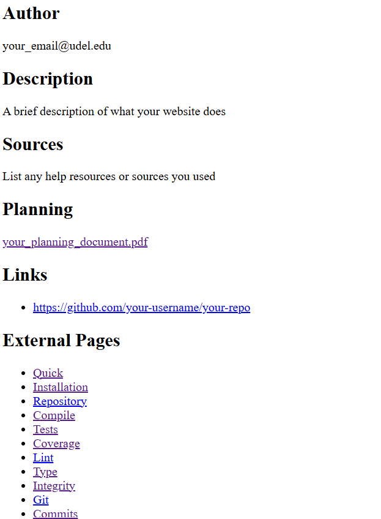

Deployment¶
When you have finished developing your website, you can deploy it to the world on a server. GitHub Pages is a free and easy way to host your website. Although normally Github Pages is only useful for hosting frontend websites, Drafter can still work with it.
Follow these 9 steps in order to deploy your website:
Step 1: Create the Repository¶
Use the URL provided by your instructor to create a new repository on Github. Make sure you use the instructor provided URL for your classroom!
Once the repository is created, you will see that there are already a bunch of files present, and a settings bar.

Step 2: Enable GitHub Pages¶
You need to turn on GitHub Pages in order to host your site. Go to the Settings tab of your repository.

On the left side of the page, scroll down and click on Pages. Under the source dropdown, select GitHub Actions.

Your site is now configured for deployment.
Step 3: Edit Your Main.py File¶
Warning
If your instructor has requirements about commit messages, review those before doing this step. Commit messages are very hard to change after the fact.
Go to the Code tab and you will see a few files listed. The most important file is main.py, which is where your website code goes. Click on main.py.
When you click on the file, it will show you the contents. Click on the pencil icon to edit the file.

The editor area allows you to paste in your code. You must add the following lines of code to your project to set up your site’s metadata.
Put these lines after the import statements, but before the start_server(...) line.
We suggest placing them right before your dataclasses and routes.
set_site_information(
author="your_email@udel.edu",
description="""A brief description of what your website does.
Use a triple quoted string if you want to span multiple lines.""",
sources=["List any help resources or sources you used"],
planning=["your_planning_document.pdf"],
links=["https://github.com/your-username/your-repo"]
)
hide_debug_information()
set_website_title("Your Website Title")
set_website_framed(False)
These lines of code:
Set the site information - This is required and provides metadata about your site including your email, description, sources, planning document filename, and relevant links.
Hide debug information - You may want to comment this line out while debugging.
Set the title - This sets the title shown in the browser tab.
Make the website full screen - This makes the website stretch to fill the whole screen instead of a small box.
There are many other ways to style your website, but these are a good starting point.
Note
You can change the filename, but this might cause deployment issues. Do not change the filename unless your instructor says it is okay.
When you are done editing, click on the Commit changes button in the top-right of the page.

A box will appear asking you to write a commit message. This describes what you changed. The default message is generic - write something descriptive like “Added my website code” instead. Always write concise, descriptive messages! Your instructor may penalize you for using default messages.
Click on the Commit changes button to save your changes.

Step 4: Upload Additional Files (If Needed)¶
If you have other files besides main.py (like images, data files, or other Python files), follow these steps to upload them:
Go to the
CodetabClick on the
Add filebutton and thenUpload files

Either drag your files directly into the folder area or click to select them from your computer

Once they have been added, click on the
Commit changesbutton to save themWrite a descriptive commit message like “Added image files”
If you have multiple files, you can upload them all at once.
Note
If you are using additional Python libraries, you can include a requirements.txt file to list them. However, not all third-party libraries are supported on deployed Drafter, so check with your instructor before using them.
Step 5: Upload Your Planning Document¶
Find the file you created in the planning phase of the project (it might be a pdf, docx, png, or other file type).
First, rename your planning document to something simple and easy to type, avoiding spaces and special characters. For example:
Project Plan.pdf→plan.pdfWebsite Design Document.pdf→design.pdf
Next, upload the file:
Go to the
CodetabClick on
Add file→Upload files
Drag your planning document into the folder area or click to select it
Click
Commit changesto save itWrite a descriptive commit message
After uploading, you’ll see the file in the interface. Write down the exact filename - you’ll need it in the next step.
The example shown here is WebsiteDesign.png.

Step 6: Update set_site_information with Your Details¶
Now you need to update the set_site_information(...) call in your main.py file with all your actual information.
Go back to main.py and click the pencil icon to edit it. Update these fields:
author: Your UD email address (e.g.,
"jdoe@udel.edu"). You can also include your name if you prefer (e.g.,"Jane Doe (jdoe@udel.edu)")description: A brief description of what your website does
sources: If you got help from websites (besides official Drafter docs), include links and explain how they helped. If someone helped you, thank them here. Provide direct URLs wherever possible. If you had no help, you can say “None” or “Official Drafter documentation only”
planning: The exact filename of your planning document (e.g.,
"plan.pdf"or"WebsiteDesign.pdf")links: A list of URLs, including:
The URL to your GitHub repository
The URL to your video (see Step 7 below - you can add this after recording the video)
Example:
set_site_information(
author="acbart@udel.edu",
description="""A quiz website about marine biology. Users can take quizzes.""",
sources=["Used W3Schools for CSS help:", "https://www.w3schools.com/css/"],
planning=["plan.pdf"],
links=["https://github.com/ud-s24-cs1/website-acbart", "https://youtu.be/abc123"]
)
Note
The information in set_site_information can be a string, a list of strings, or even PageContent like Div, Link, etc.
Remember that you can use triple quotes for multi-line strings. If the text is a hyperlink, then it will automatically be turned into a clickable link on the about page.
Click Commit changes and write a descriptive commit message like “Updated site information”.
Step 7: Record a Video¶
Record a video of your web application running. Make sure you show and address all of the following with a voiceover:
What your web application does
What each page of your website looks like in action (walk through the website)
What the state of your website looks like (explain the fields of your State dataclass)
Make sure your video is audible and visible - if we cannot see or hear parts, we will treat those parts as if they do not exist
Here are some tips:
You do not need to walk through the code, but we do want to see all features
Aim for 2-5 minutes in length - don’t pad with unnecessary details, but don’t skip important parts
Think of this as something for your portfolio when you apply for internships and jobs
You can use Zoom to record videos - just make sure everything is clear
Upload your video to a website where it can be viewed by the graders (YouTube, Google Drive with sharing enabled, etc.). If the video is not publicly accessible, you will not receive credit for this part.
Copy the URL of your video and add it to the links list in your set_site_information(...) call in main.py.
Note
You can record the video either before or after deploying your website. If you want to record the deployed version, wait until after Step 8, then come back and add the video URL to your main.py file. Just make sure to record the video before the deadline.
Step 8: Deploy Your Website¶
Once you have uploaded your files and updated your code, you need to manually trigger the deployment of your website.
Go to the
Actionstab of your repository

Click on the
Deploy main branch as websiteworkflow on the left sideClick the
Run workflowbutton on the right side, then click the greenRun workflowbutton in the dropdown

Your site will now start deploying! You can monitor the progress in the Actions tab.
If the deployment succeeds (green checkmark), you’ll see a link to your deployed website.

If you see a red X, there was an error. Click on the red X to see the job summary, then click the next red X to see the deployment logs. The error message will help you understand what went wrong.

Common errors include:
Forgetting to enable GitHub Pages (Step 2)
Syntax errors in your Python code
Missing required files
Forgetting to update
set_site_information(...)with your detailsUsing unsupported libraries
Changed the filename of
main.py
If you see an error, fix it in your code, commit the changes, and then manually trigger a new deployment again (repeat this step).
Note
The Actions section lists all deploy attempts in chronological order. Past attempts with red X marks are okay as long as the most recent (top) attempt was successful.
Step 9: Get Your Deployed URL and Submit¶
After a successful deployment (green checkmark), you need to get the URL of your deployed website.
In the
Actionstab, click on the green checkmark of your successful deployment

You will be presented with the deployed URL - this is what you will submit on Canvas
Test your deployed website by clicking the URL and making sure everything works correctly
Warning
Make sure you submit the deployed URL, which will look something like: https://ud-s24-cs1.github.io/cs1-website-username/
Do NOT submit:
The URL with
docs/at the end (this is an internal build folder, not your website)The GitHub repository link (e.g.,
https://github.com/ud-s24-cs1/cs1-website-username)The local URL
http://localhost:8080- this only works on your computer!
Test the link after you submit, from another device if possible. Submitting the wrong link could earn you zero points!
Checking Your Site Information¶
If you set your site information correctly, it will be available by adding --about to your deployed URL.
For example, if your deployed URL is https://ud-s24-cs1.github.io/cs1-website-username/, then view your site information at:
https://ud-s24-cs1.github.io/cs1-website-username/--about
Make sure that:
All the links work
The video is visible and audible
The planning document link works
All information is accurate
Here is an example of what this might look like:
Deployment Dashboard¶
Whether your deployment succeeds or fails, there is useful information available in the deployment dashboard.
Take your original deployment URL (e.g., https://ud-s24-cs1.github.io/cs1-website-username/) and add dashboard/ to the end:
https://ud-s24-cs1.github.io/cs1-website-username/dashboard/
The dashboard shows:
Any errors or warnings during deployment (shown at the top)
Quick links to the deployed site, GitHub deployment logs, GitHub repository, commit messages, and tests
Your Build Log at the bottom, which includes all the steps Drafter took to deploy your site
This is very helpful for debugging deployment issues.
Common Issues and Tips¶
My deployment failed - what should I do?
Check the error message in the Actions tab logs
Common problems include:
Not enabling GitHub Pages (go back to Step 2)
Syntax errors in your Python code
Missing files or wrong filenames
Forgot to upload your website code to
main.pyChanged
set_site_information(...)incorrectlyChanged the filename of
main.pyUsing unsupported libraries without checking first
Forgot to re-run the deployment after fixing issues
Fix the problem in your code
Commit your changes with a descriptive message
Go back to Step 8 and manually trigger a new deployment
How do I update my website after I’ve deployed it?
Make your changes to
main.pyor other files in the GitHub editorCommit your changes with a descriptive message
Go to the Actions tab and manually trigger a new deployment (Step 8)
Can I use additional Python files or libraries?
Yes! Upload additional Python files following the instructions in Step 4. For libraries, create a requirements.txt file, but check with your instructor first as not all libraries are supported on deployed Drafter.
What if I recorded my video of the local version but now want to show the deployed version?
You can record a new video anytime. Just update the links in your set_site_information(...) call with the new video URL, commit the change, and redeploy.